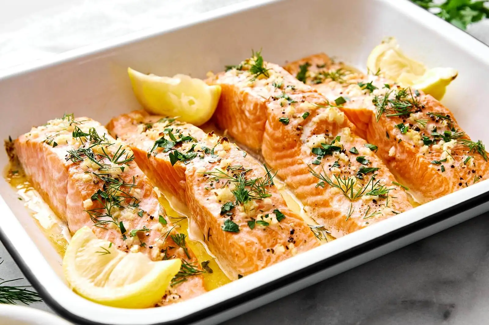

Baked Salmon
Home

Description
Easy and healthy baked salmon. Made with lemon and garlic for incredible flavour and baked in the over for tenderness. This tasty salmon recipe is the perfect answer for busy nights or special occasions!
Ingredients
- 6 salmon fillets
- 3 tbsp butter or margarine
- 2 tsp olive oil
- 1 tsp salt
- 1 tsp black pepper
- 4 minced garlic cloves
- 1/2 lemon
- 1 tsp chopped thyme
- 1 tsp oregano
Steps
- Preheat oven to 400 degrees and grease baking pan.
- Arrange salmon fillets on baking sheet and season with salt and pepper.
- Stir together the oilve old, garlic, herbs, spices and juice of 1/2 lemon. Spread sauce over salmon fillets. Ensure there are no dry spots on any fillets.
- Bake the salmon in the over for 12-15 minutes or until salmon is flaky. Broil last 2 minutes if desired.
- Garnish with fresh thyme or parsley